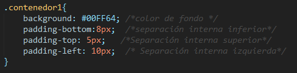

Para aplicar estilos y dominar el manejo de contenedores, el estudiante debe poder diferenciar entre etiquetas de linea y etiquetas de bloque. Si el estudiante no puede diferenciar estos dos tipos de etiquetas tendrá problemas al momento de aplicar ciertos estilos a alguna etiqueta HTML.
El siguiente estilo se aplicara a una etiqueta de linea y a una etiqueta de bloque.
Como se puede observar a las dos etiquetas se les aplica el mismo estilo, pero no se tiene el mismo resultado. La etiqueta de linea no logra reconocer el alto y ancho que se le da con los estilos.
La etiqueta <div> nos ayuda en el manejo de contenedores. Estos contenedores van asociados un id o un class. El id debe ser declarado solo una vez, a diferencia del class que puede ser declarado mas de una vez.
En el siguiente ejemplo se aplicara estilos a un contenedor padre (contenedor1) y a un contenedor hijo (caja)
Resultado
Margin o también conocido como margen externo, permite darle cierto espacio de separación en las 4 posiciones (top, right, bottom, left).
Resultado
Puede notarse que entre las cajas hay una separación de 6px, pero entre el contenedor y las cajas no existe tal separación. Para que exista tal separación se aplica padding.
Padding o también conocido como padding interno, permite darle cierto espacio de separación en las 4 posiciones (top, right, bottom, left).
Resultado
FlexBox nos permite ordenar y manipular los contenedores de una manera mas facil. Para entenderlo mejor se realizara un pequeño menú de navegación.
Resultado
Para aplicar flexbox se debe identificar al contenedor padre. En este caso queremos que las listas <li> se posicionen de manera horizontal. Entonces la etiqueta padre de los <li> es la etiqueta <ul>. A esta etiqueta se le aplicara flexbox. Antes se aplicara algunos estilos al menú de navegación.
Resultado
Ahora se aplicara la propiedad flex para que el menú tome la posición horizontal.
Resultado
El menú ya tomo la posición horizontal pero todos los menús estan juntos uno al otro, entonces se hara uso de algunas propiedades de flexbox para darles una pequeña separación
Se hará uso de la propiedad justify-content:space-around;Esta propiedad separa a los contenedores con el mismo espacio de separación a su alrededor y puede ser utilizada despues de haber aplicado display:flex;.
Resultado
La siguiente propiedad justify-content:center;Esta propiedad centra los contenedores y puede ser utilizada despues de haber aplicado display:flex;.
Resultado
Existen muchas propiedades mas sobre flexbox, en el siguiente enlace puede ver mas información. FlexBox
Se pudo ver en los diferentes ejemplos el uso de las clases. Gracias a las clases se pueden aplicar estilos a más de un elemento. Al contrario con el Id solo se puede aplicar estilos a un solo elemento. No se debe olvidar que las clases pueden repetirse como la clase caja. Ver referencia clase caja . Los id's son únicos y no pueden repetirse. Se puede notar en el primer párrafo la palabra linea y la palabra bloque. A estas dos palabras se les da un id único por que el estilo que se les aplica son únicos. Ver referencia ID .